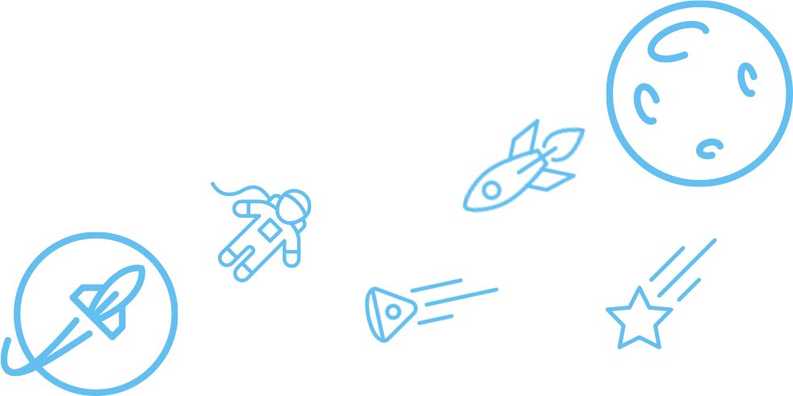

하봉안이 이룩한 성과들
시스템이 정해져 있는 일을 하기보다, 시스템을 만들어가는 일을 주로 했습니다. 어떤 일이든 구체적인 '기대 효과’와 ‘목표’를 정의하고, 이를 통해 달성할 ‘성과’를 중심으로 고민합니다. 지난 2012년부터 인터넷 업계에 몸을 담고 3개의 웹서비스와 2개의 모바일 애플리케이션을 개발하고 운영하였습니다. 앞으로 눈을 감는 그날까지 사람들의 일상을 혁신하는 기술 비즈니스 매니아가 되고 싶습니다.

성과 요약
인터넷 기업에 눈뜨다
- 일일 20개의 기사를 편집, 작성, 발행하고, 웹서비스의 기획 및 콘텐츠 유통을 담당하였음.